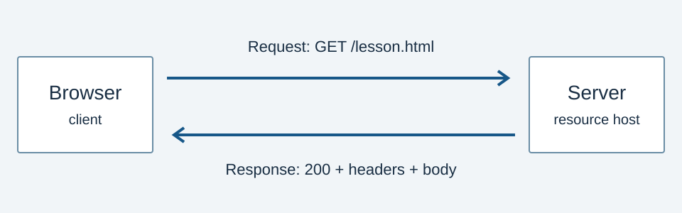

Overview
I chose HTTP because almost every visible part of a website depends on an exchange that the visitor never sees. A browser needs a way to request its HTML, load a stylesheet, and retrieve the images that give the content meaning.
This site examines HTTP as one component of the web. It follows the protocol's development and explains how newer versions address delivery problems while keeping familiar request meanings. The goal is to make that process understandable without assuming a background in networking.
The most useful distinction is between what a request means and how it travels. A GET request still asks for a representation, even when the connection uses a newer protocol version.

Read more: MDN: Overview of HTTP, RFC 9110: HTTP Semantics.